SUPER SCIENCE HIGH SCHOOL
TOYO USHIKU SSH 特設サイト
令和8年度〜 スーパーサイエンスハイスクール指定校 文理融合基礎枠
文部科学省より
スーパーサイエンスハイスクール
（SSH）の指定を受けました。
東洋大学附属牛久中学校・高等学校は、文部科学省よりスーパーサイエンスハイスクール（SSH）の指定を受けました。本校の研究課題は「哲学的思考を基盤とした『総合知×データサイエンス』融合プログラムの開発」です。
東洋大学の伝統である「哲学」を教育の核に据え、全校で「哲学シンキング」を展開。本質的な問いを立てる力を磨きます。そこに最新の「データサイエンス」を掛け合わせ、ICTやAIを駆使した客観的な実証力を身につけます。
さらに地域課題の解決やグローバルな発信を通じ、文理の枠を超えて未来を切り拓く「総合知」を備えた人材を育成します。科学と哲学の対話から、新しい価値を創造する学びがここから始まります。
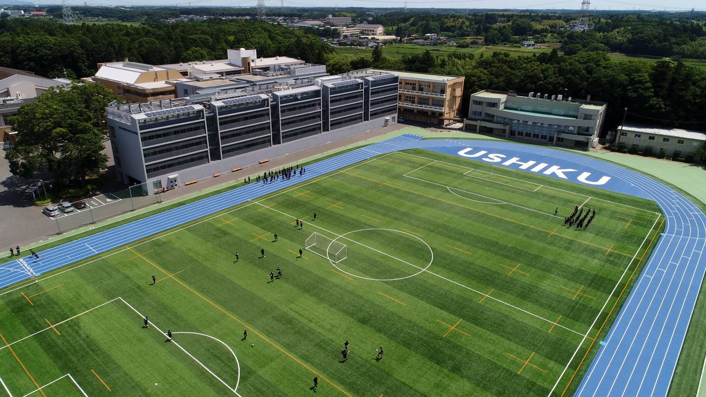
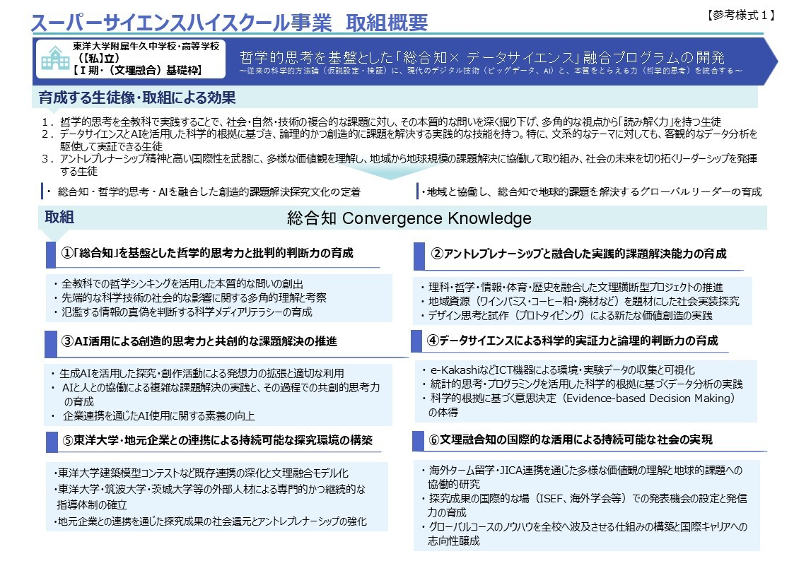
研究主題
哲学的思考を基盤とした
「総合知×データサイエンス」融合プログラムの開発
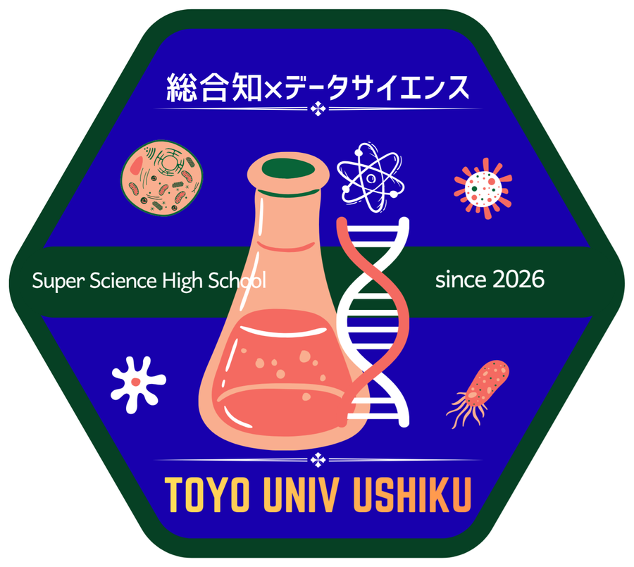
東洋大学の「総合知」を核に、吉田幸司氏提唱の哲学シンキングとデータ・ＡＩ活用を融合した文理融合プログラムを展開し、生徒の問いを立てる力と科学的解決能力を育成する。
これにより、人文社会科学的テーマを科学的視点で深く「読み解く力」を養い、地域から地球規模の課題解決に挑戦し、未来を切り拓く人材を育成する。
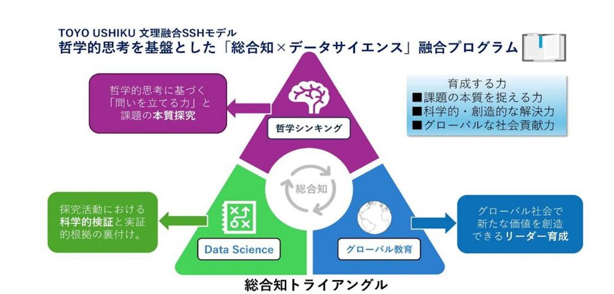
コンテンツ一覧
SSH特設サイト(Google Sites)の
トップページ
探究教育
本校が掲げる探究教育の全体像とビジョン
↗ ［03］ FRONTIER BOOSTPROGRAM
文理融合基礎枠 独自の学び推進プログラム
↗ ［04］ SSH成果物生徒による研究・探究活動の成果一覧
↗ ［05］ 探究活動の様々な取り組み
学年・教科をこえた探究活動の記録
↗ ［06］ SSH普及・発信活動地域・社会への成果発信と普及の取り組み
↗ ［07］ 研究開発実施報告書文部科学省への年次研究開発報告書
↗ ［08］ 運営指導委員会外部有識者による指導・助言の記録
↗ ［09］ SSH先進校視察・受け入れ
他校との視察交流・受け入れ実績
↗ ［10］ SSH通信「LOGOS Ushiku」
SSHの日々の活動を届けるニュースレター
↗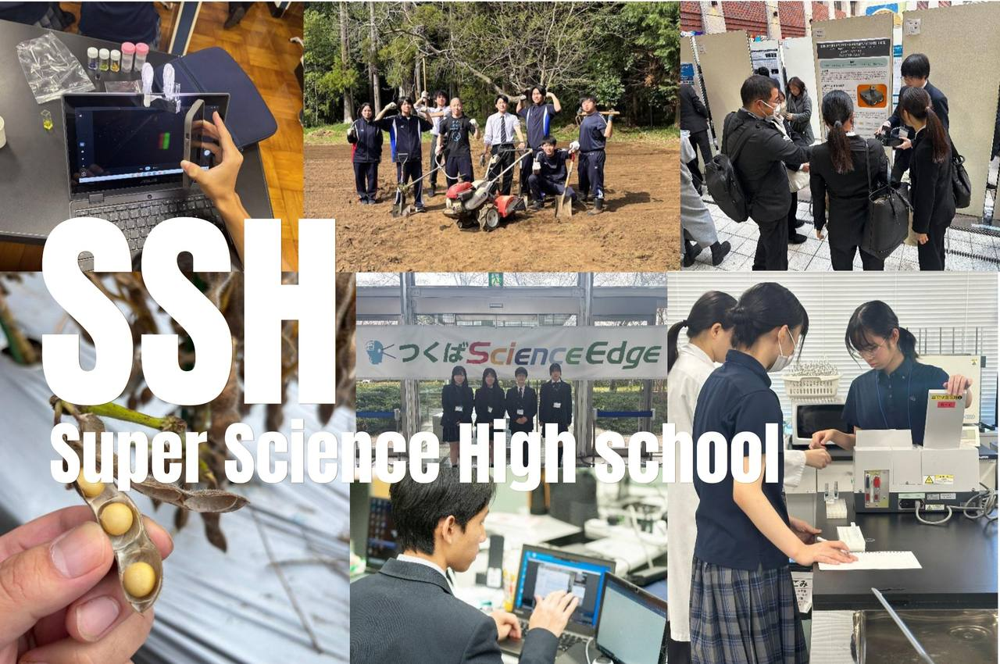
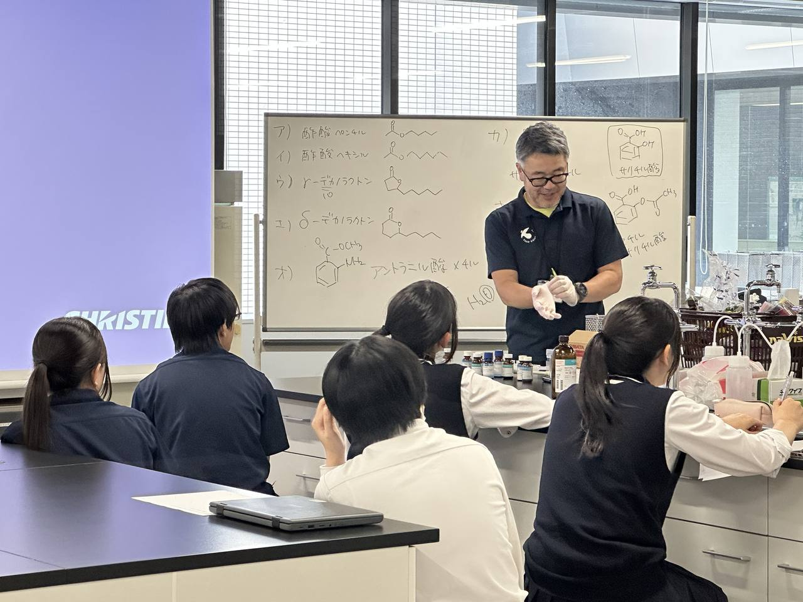
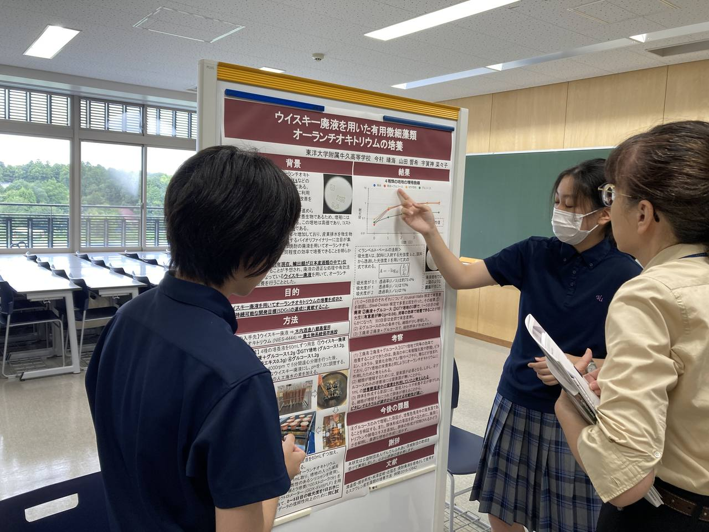
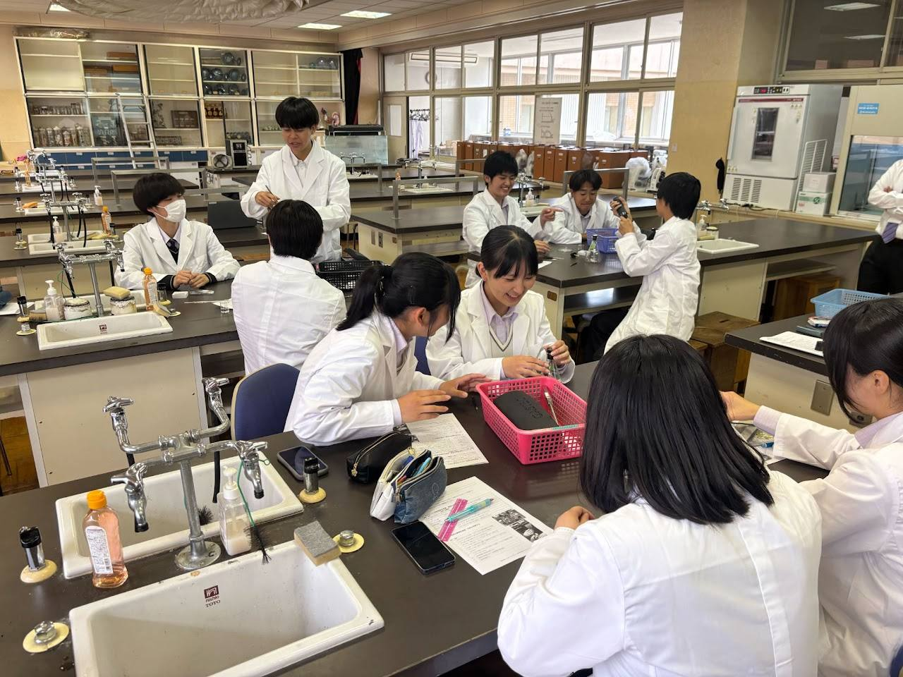
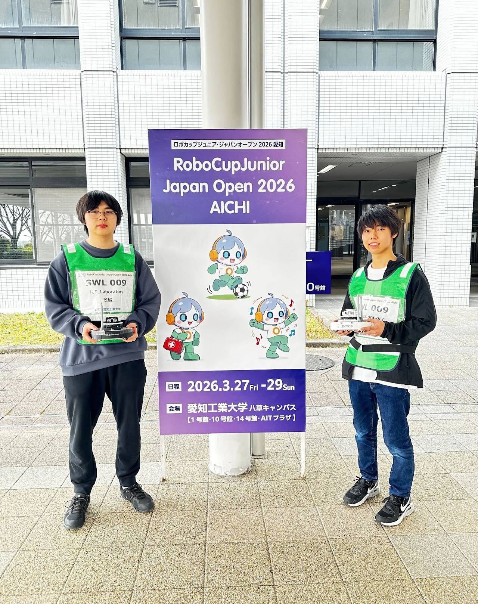
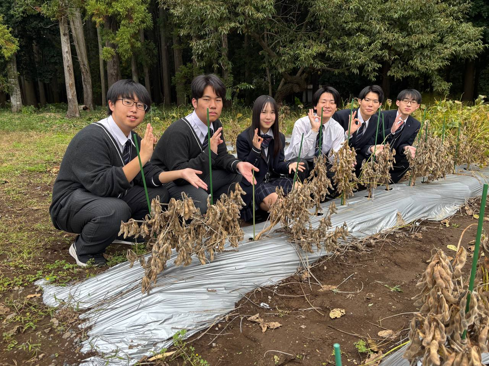
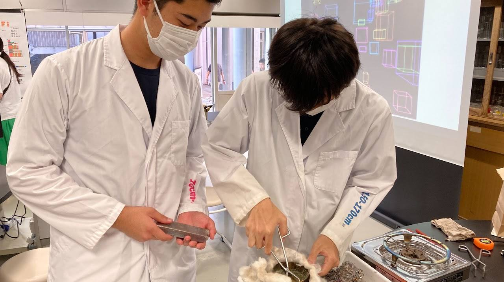